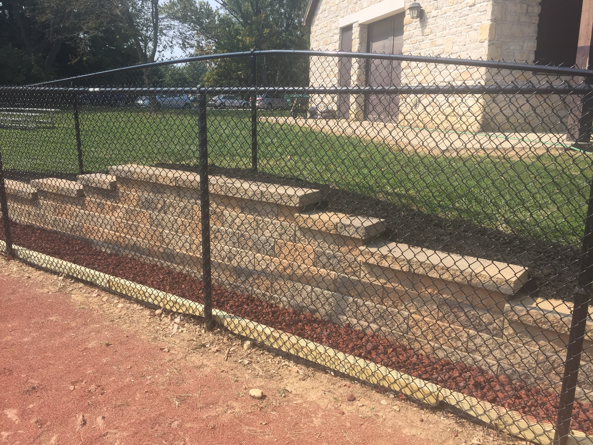
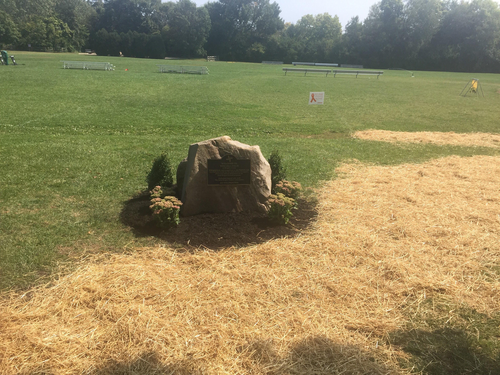
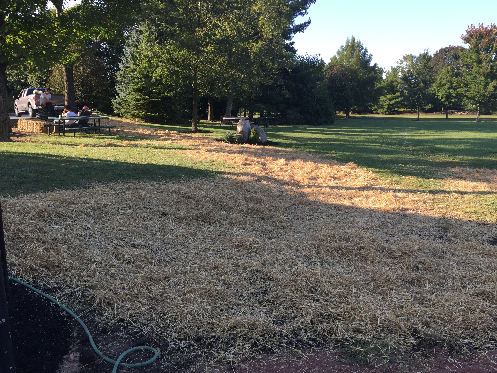

For my Eagle Scout project, I did landscaping and construction work at my local church and former middle school: Saint Brigid of Kildare. The work included demolishing an old, hazardous barn, replacing a portion of missing fence, as well as laying grass seed, mulch, and gravel in various parts of the property.
  Still to this day I consider finishing my Eagle Scout projects to be one of my greatest achievements in leadership and project management. Being the sole leader of the project meant that I had to prepare very well for each day of work, and I had to be prepared to improvise and lead with confidence in the event that things did not go as planned.